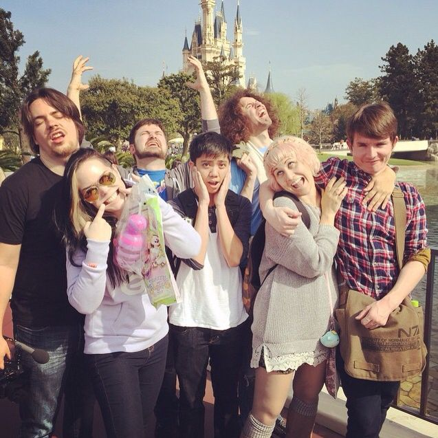
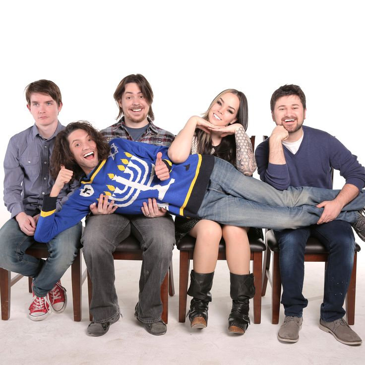
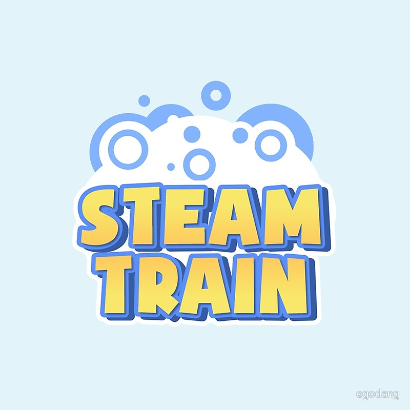
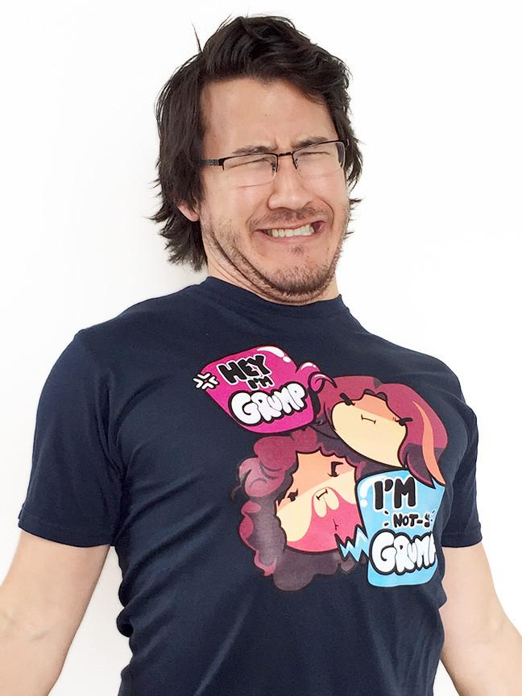
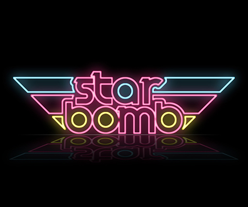

Game Grumps is a Let's Play webseries hosted by American Internet personalities Arin Hanson and Dan Avidan. The series was created on July 10, 2012 by Hanson and comedic media critic Jon Jafari. After Jafari left the show in 2013 to focus on his own YouTube webseries, JonTron, he was subsequently succeeded by Avidan. Following's Jafari's departure, the channel expanded to incorporate new hosts in spin-offs, including Ross O'Donovan, Barry Kramer, Suzy Berhow, Brian Wecht of the band Ninja Sex Party, editors Kevin Abernathy, Ryan Magee and Matt Watson, Chris O'Neill and various guests. From June 2013 to January 2016,[1] the channel was part of Polaris, a network owned by Maker Studios. As of November 2017, the channel has over 4 million subscribers and over 3 billion total video views.[2] The channel now operates under JETPAK, a network created by Adam Montoya.
| Game Grumps | Steam Train | NSP |
|---|---|---|
| Arin Hanson | Ross O'Donovan | Brian Wecht |
| Dan Avidan | Barry Kramer | Dan Avidan |
Started as a hobby, Arin Hanson has quickly created a company with heart. But it takes more than just one voice-actor to create a memorable crew. Over the years the grump crew as greatly expanded with crew that each bring their own touch to the show..
Aside from the hit-Youtube show Game Grumps, there are also co-shows involcing other memebers of the crew: Steam Train, Grump-cade, GrumpvsGrump.
All the Game Grump merchandise is created by the grumps themselves! Certain items are for a limited time only and a portion of proceeds go to a variety of charities!
There's more to the crew than just playing video games. Original songs, videos, animations and skits are presented and created by the memebrs of the Game Grump crew.
{kind=link}
{kind=link}
{kind=link}
{kind=link}